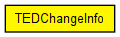

Data structure supplied with NF_TED_CHANGE NotificationBoard notifications. This triggers the link state protocol to send out up-to-date link state info about the given links.
The following diagram shows usage relationships between types. Unresolved types are missing from the diagram. Click here to see the full picture.
The following diagram shows inheritance relationships for this type. Unresolved types are missing from the diagram. Click here to see the full picture.
| Name | Type | Description |
|---|---|---|
| tedLinkIndices | int[] |
// // Data structure supplied with NF_TED_CHANGE NotificationBoard notifications. // This triggers the link state protocol to send out up-to-date link state info // about the given links. // class TEDChangeInfo { int tedLinkIndices[]; }